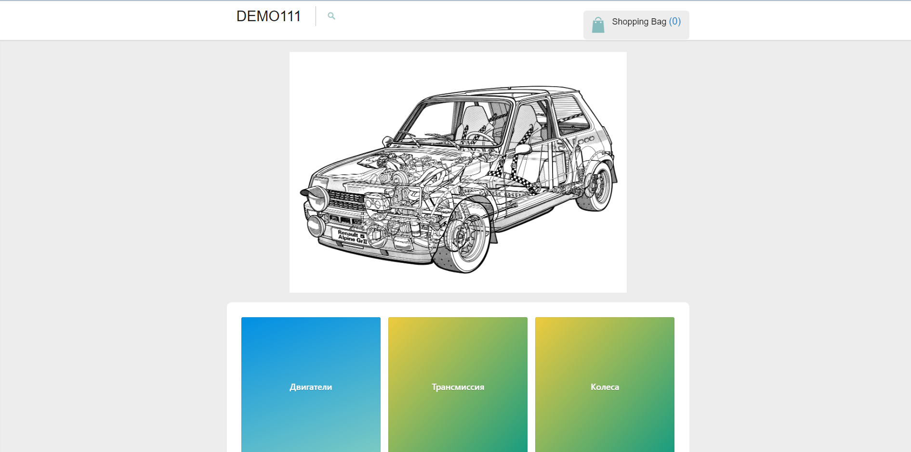

Trial task QA
HTML, JavaScript
modified existing web page
I have different working experience. For example I can organize sporting event for 100 people or make a plan of setting airplane`s antenna. I am an engineer now.
Web coding is very interesting sphere for me, because I want to have actual profession and to be useful for community.
var runLengthEncoding = function(str){
console.log(str);
let arr = str.split('');
arr.push(true);
let count = 1;
let res = [];
console.log(arr);
for (let i = 0; i < arr.length - 1; i++) {
if (arr[i] === arr[i + 1]) {
count ++;
} else {
res.push([count, arr[i]]);
count = 1;
}
}
return res;
}